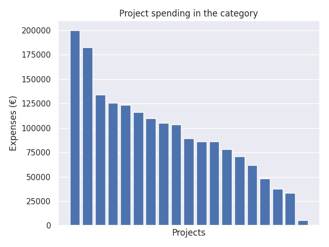

Innovatiivisten oppimisympäristöjen edistäminen varhaiskasvatuksessa 2017
Category summary
94.6K spent on average
200K highest spending

Reports in the category
Lahden kaupunki
Project name: Mun päiväkoti - päijäthämäläiset lapset oppimisympäristöjen innovoijina
200K spent
Hattulan kunta
Project name: Innovatiivisten oppimisympäristöjen edistäminen varhaiskasvatuksessa 2017
182K spent
Kemin kaupunki
Project name: Liikkuen, leikkien iloisesti oppien
134K spent
Espoon kaupunki, suomenkielinen ja ruotsinkielinen varhaiskasvatus
Project name: Liikkumaan ja leikkimään INNOstava oppimisympäristö
126K spent
Lapinlahden kunta
Project name: Toiminnallinen varhaiskasvatus
123K spent
Turun kaupungin sivistystoimiala, varhaiskasvatus
Project name: Tallimäen päiväkodin oppimisympäristöjen kehittäminen
116K spent
Vantaan varhaiskasvatus
Project name: Kokeellinen oppimisympäristö varhaiskasvatuksessa
110K spent
Lohjan kaupunki
Project name: Virtaa varhaiskasvatukseen - tilat, osaaminen ja teknologia vastaamaan lapsen tarpeisiin
105K spent
Sateenkaari Koto ry
Project name: Multaa ja Mukuloita - ruoan ja ravinteiden kierto varhaiskasvatuksen opetuksessa
103K spent
Uudenkaupungin kaupunki
Project name: Oppimisen elämyksiä Uudenkaupungin varhaiskasvatuksessa
89.5K spent
Liperin kunta
Project name: Teknologiaa ekosti-Ratkaisukeskeinen oppimisympäristö lasten ekososiaalisen kasvun tukena
86.1K spent
Barnavårdsförningen i Finland r.f.
Project name: Lockande lärmiljö - projekt som uppmuntar till lek och utforskande på daghem
86.1K spent
Kronoby kommun
Project name: Innovativ digilek
78.1K spent
Oriveden kaupunki / Varhaiskasvatus
Project name: Lasten omaehtoisen liikunnan ja pitkäkestoisen leikin vahvistaminen varhaiskasvatuksen toimintakulttuurissa
70.8K spent
Lappeenrannan kaupunki, Saimaan mediakeskus
Project name: Molla goes Steam - Lumottu oppimisympäristö
61.8K spent
Pargas stad
Project name: Gäddan och gängets mobila Skärgårdskulturlabb
48K spent
Kaustisen kunta
Project name: InnoVasu2017
37.6K spent
Paltamon kunta
Project name: Mesikämmen liikuttaa
33.6K spent
Posion kunta
Project name: Eväitä elämään satupuutarhasta
5.49K spent